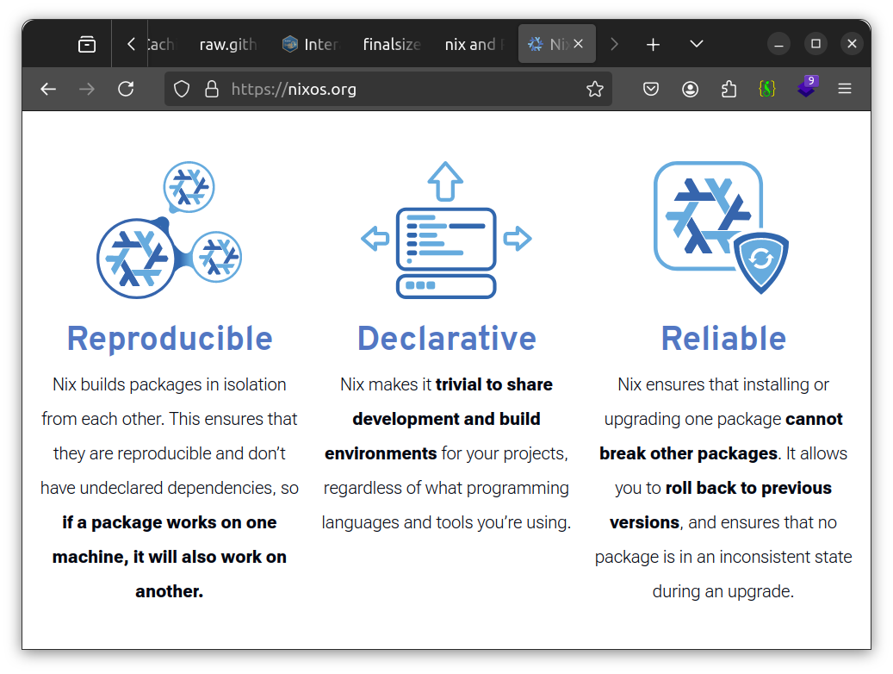
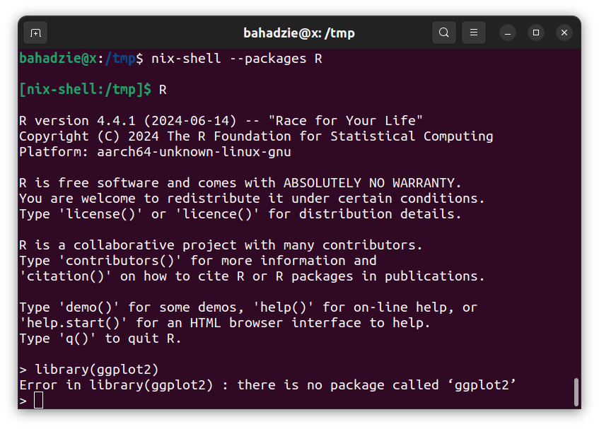
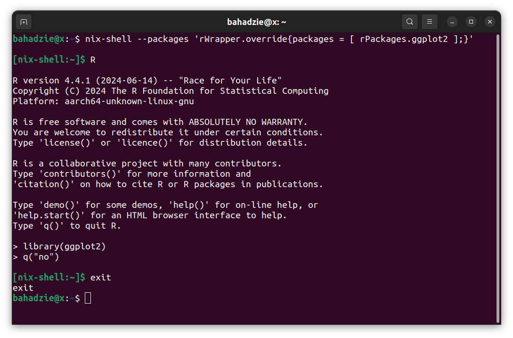
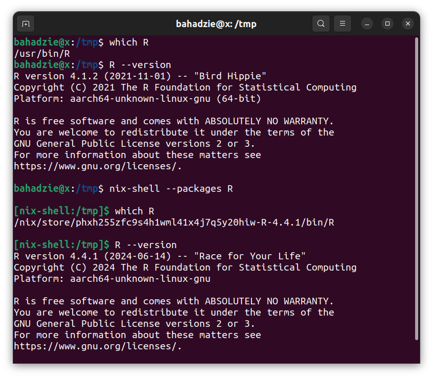
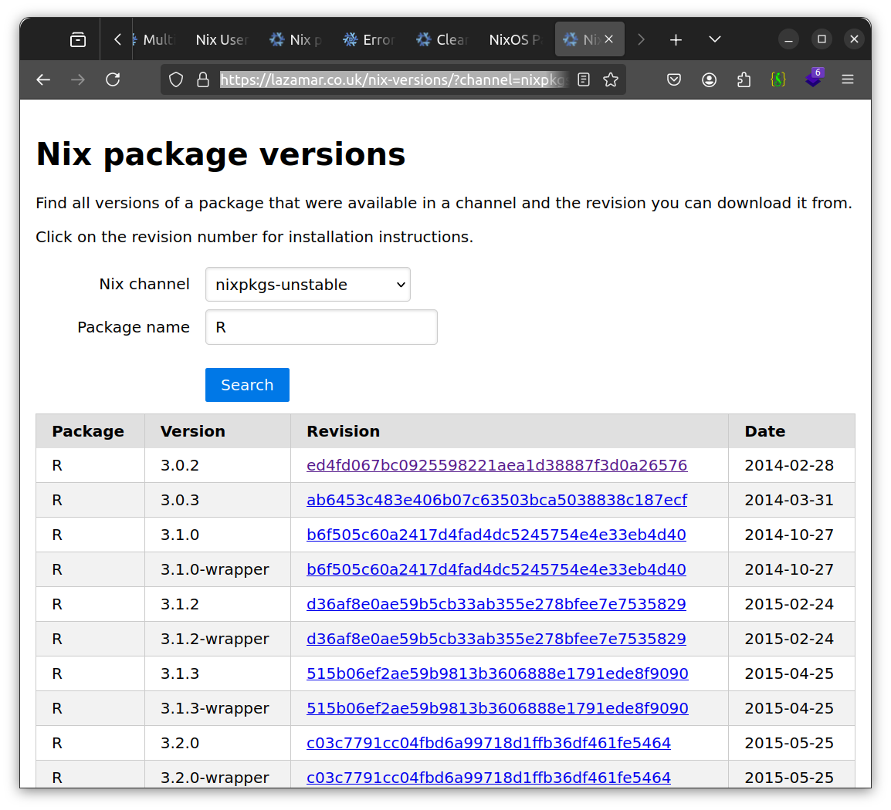
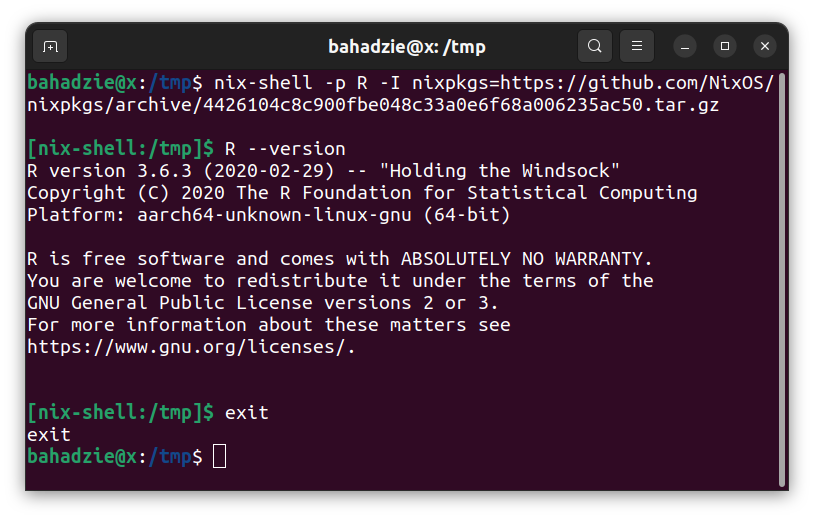
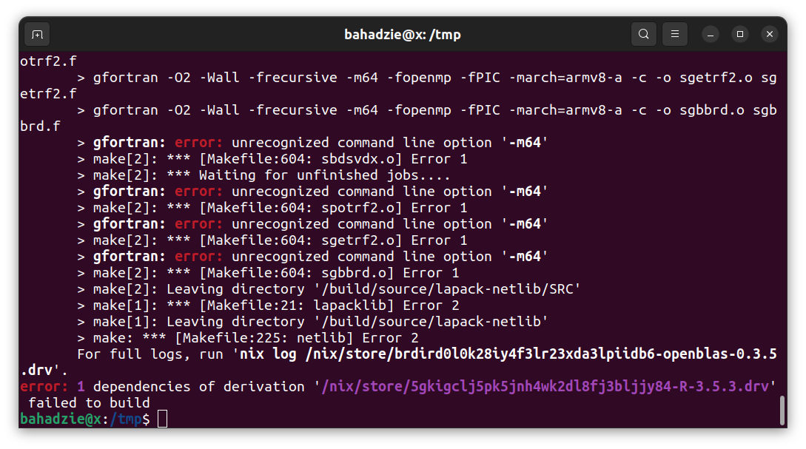
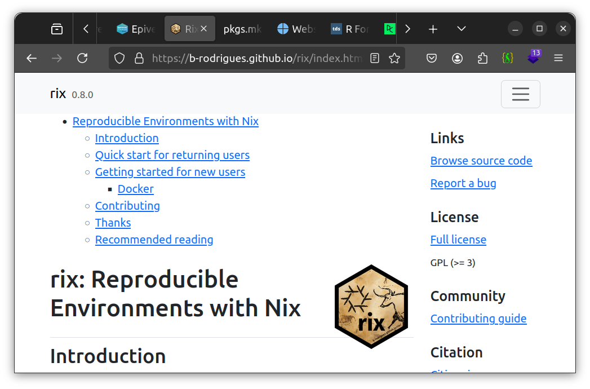

3 Presentations
Faster CI/CD | reproducible environments | Quarto
Faster CI/CD - docker in GH actions
GH actions
Files
name: render readme
on:
workflow_dispatch:
push:
branches:
- "docker"
paths:
- 'README.Rmd'
- '.github/workflows/render_readme.yml'
- '.github/workflows/render_readme_docker.yml'
concurrency:
group: ${{ github.workflow }}-${{ github.ref }}
cancel-in-progress: true
permissions:
contents: write
jobs:
render-readme:
runs-on: ubuntu-latest
env:
GITHUB_PAT: ${{ secrets.GITHUB_TOKEN }}
steps:
- name: Checkout repos
uses: actions/checkout@v4
- name: Setup R
uses: r-lib/actions/setup-r@v2
with:
use-public-rspm: true
- name: Setup pandoc
uses: r-lib/actions/setup-pandoc@v2
- name: Install dependencies
uses: r-lib/actions/setup-r-dependencies@v2
with:
extra-packages: any::rmarkdown, local::.
- name: Compile the readme
run: |
writeLines(
knitr::knit_expand(
"README.Rmd",
packagename = read.dcf("DESCRIPTION", "Package"),
institution = read.dcf("DESCRIPTION", "Config/Institution"),
department = read.dcf("DESCRIPTION", "Config/Department"),
department_url = read.dcf("DESCRIPTION", "Config/DepartmentURL"),
recon = read.dcf("DESCRIPTION", "Config/Recon"),
recon_description = read.dcf("DESCRIPTION", "Config/ReconDescription"),
gh_repo = Sys.getenv("GITHUB_REPOSITORY")
),
"README_expanded.Rmd"
)
rmarkdown::render(
"README_expanded.Rmd",
output_file = "README.md",
output_dir = "."
)
shell: Rscript {0}
- name: Commit files
run: |
git config --local user.email "action@github.com"
git config --local user.name "GitHub Action"
if ! git diff-index --quiet HEAD; then
git add README.md
# Also add README figures if they exist
if [ -d man/figures ]
then
git add man/figures/
fi
git commit -m "Automatic readme update"
git pull --rebase origin ${{ github.ref.name }}
git push origin || echo "No changes to push"
finame: render readme + docker
on:
workflow_dispatch:
push:
branches:
- "docker"
paths:
- 'README.Rmd'
- '.github/workflows/render_readme.yml'
- '.github/workflows/render_readme_docker.yml'
concurrency:
group: ${{ github.workflow }}-${{ github.ref }}
cancel-in-progress: true
jobs:
render-readme:
runs-on: ubuntu-latest
container: bahadzie/alpine-r:4.3.0
steps:
- name: Checkout repos
uses: actions/checkout@v4
- name: Compile the readme
run: |
writeLines(
knitr::knit_expand(
"README.Rmd",
packagename = read.dcf("DESCRIPTION", "Package"),
institution = read.dcf("DESCRIPTION", "Config/Institution"),
department = read.dcf("DESCRIPTION", "Config/Department"),
department_url = read.dcf("DESCRIPTION", "Config/DepartmentURL"),
recon = read.dcf("DESCRIPTION", "Config/Recon"),
recon_description = read.dcf("DESCRIPTION", "Config/ReconDescription"),
gh_repo = Sys.getenv("GITHUB_REPOSITORY")
),
"README_expanded.Rmd"
)
rmarkdown::render(
"README_expanded.Rmd",
output_file = "README.md",
output_dir = "."
)
shell: Rscript {0}
commit-readme:
needs: render-readme
runs-on: ubuntu-latest
steps:
- name: Commit files
run: |
git config --local user.email "action@github.com"
git config --local user.name "GitHub Action"
if ! git diff-index --quiet HEAD; then
git add README.md
# Also add README figures if they exist
if [ -d man/figures ]
then
git add man/figures/
fi
git commit -m "Automatic readme update"
git pull --rebase origin ${{ github.ref.name }}
git push origin || echo "No changes to push"
fi
shell: bash {0}FROM alpine:3.18
# Install R 4.3.0, Pandoc, OS deps and pak package manager
RUN apk --no-cache add pandoc-cli git R R-dev g++ && \
R -q -e 'install.packages("pak", repos = sprintf("https://r-lib.github.io/p/pak/stable/%s/%s/%s", .Platform$pkgType, R.Version()$os, R.Version()$arch))'
# Needed for rcmdcheck, pkgdown
RUN apk --no-cache add linux-headers
# Needed for pkgdown
RUN apk --no-cache add libxml2-dev
RUN apk --no-cache add fontconfig-dev
RUN apk --no-cache add harfbuzz-dev
RUN apk --no-cache add fribidi-dev
RUN apk --no-cache add freetype-dev
RUN apk --no-cache add libpng-dev
RUN apk --no-cache add tiff-dev
RUN apk --no-cache add libjpeg-turbo-dev
RUN R -q -e 'pak::pak("any::rcmdcheck"); pak::cache_clean()'
RUN R -q -e 'pak::pak("any::covr"); pak::cache_clean()'
RUN R -q -e 'pak::pak("any::pkgdown"); pak::cache_clean()'
# Installed with pkgdown so no need to install explicitly
# RUN R -q -e 'pak::pak("any::rmarkdown"); pak::cache_clean()'
# Problematic because alpine doesn't have a libv8 port
# RUN R -q -e 'pak::pak("any::cffr"); pak::cache_clean()'
# RUN R -q -e 'pak::pak("any::V8"); pak::cache_clean()'name: Build Docker R image
on:
workflow_dispatch:
push:
branches:
- "main"
# To be able to cancel a job in progress if the workflow file is updated
concurrency:
group: ${{ github.workflow }}-${{ github.ref }}
cancel-in-progress: true
jobs:
build:
runs-on: ubuntu-latest
steps:
- name: Checkout
uses: actions/checkout@v4
- name: Cache Docker Image
id: cache
uses: actions/cache@v3
with:
path: /tmp/image.tgz
key: ${{ runner.os }}-dockerimage-1-{{ hashFiles('/tmp/image.tgz') }}
- name: Set up Docker Buildx
uses: docker/setup-buildx-action@v3
- name: Build and push
uses: docker/build-push-action@v5
with:
context: .
platforms: linux/amd64 # only one needed to run on GH
file: ./Dockerfile
cache-from: type=gha # for cacheing build layers between builds
cache-to: type=gha,mode=max # for cacheing build layers between builds
outputs: type=tar,dest=/tmp/image.tar # output a local file that can be cached
tags: |
${{ secrets.DOCKERHUB_USERNAME }}/alpine-r:4.3.0
- name: Zip image
run: |
cat /tmp/image.tar | gzip > /tmp/image.tgzreproducible environments - Nix & R
Nix
over 100,000 packages
Learn more: Nix
Install Nix
macOS
sh <(curl -L https://nixos.org/nix/install)
Linux
sh <(curl -L https://nixos.org/nix/install) --daemon
Windows (WSL2)
sh <(curl -L https://nixos.org/nix/install) --daemon
Learn more: Nix Reference Manual - Multi User Installation
Install software
nix-shell --packages R

nix-shell --packages 'rWrapper.override{packages = [ rPackages.ggplot2 ];}'


R >= 3.0.2
Learn more: Nix package versions
Older versions
nix-shell -p R -I nixpkgs=https://github.com/NixOS/nixpkgs/archive/4426104c8c900fbe048c33a0e6f68a006235ac50.tar.gz

nix-shell -p R -I nixpkgs=https://github.com/NixOS/nixpkgs/archive/25b53f32236b308172673c958f570b5b488c7b73.tar.gz

R 4.4.1 (June, 2024)
R 4.4.0 (April, 2024)
R 4.3.3 (February, 2024)
R 4.3.2 (October, 2023)
R 4.3.1 (June, 2023)
R 4.3.0 (April, 2023)
R 4.2.3 (March, 2023)
R 4.2.2 (October, 2022)
R 4.2.1 (June, 2022)
R 4.2.0 (April, 2022)
R 4.1.3 (March, 2022)
R 4.1.2 (November, 2021)
R 4.1.1 (August, 2021)
R 4.1.0 (May, 2021)
R 4.0.5 (March, 2021)
R 4.0.4 (February, 2021)
R 4.0.3 (October, 2020)
R 4.0.2 (June, 2020)
R 4.0.1 (June, 2020)
R 4.0.0 (April, 2020)
{rix} 


Learn more: rix: Reproducible Environments with Nix
rix(…)
rix(
r_ver = "latest",
r_pkgs = NULL,
system_pkgs = NULL,
git_pkgs = NULL,
local_r_pkgs = NULL,
tex_pkgs = NULL,
ide = c("other", "code", "radian", "rstudio", "rserver"),
project_path = ".",
overwrite = FALSE,
print = FALSE,
message_type = "simple",
shell_hook = NULL
)Learn more: ?rix
Testing rix()
rix(r_ver = "4.0.0",
r_pkgs = c("linelist", "cleanepi"),
system_pkgs = NULL,
git_pkgs = list(package_name = "finalsize",
repo_url = "https://github.com/epiverse-trace/finalsize",
branch_name = "main",
commit = "1d4b6b17886fa042c363af47cdad8c720117d3bc"),
ide = "other",
project_path = tempdir(),
overwrite = TRUE)